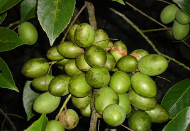

জলপাই এর পরিচিতি
টক স্বাদের এই ফলটি আমাদের দেশে খুবই জনপ্রিয়। কাঁচা ফল তো বটেই জলপাইয়ের আচার ও চাটনিও
সকলের পছন্দ। জলপাই এমন একটি ফল যা শুধু শীতের শুরুতে পাওয়া গেলেও আচার বানিয়ে বা সেদ্ধ
করে তেলে ডুবিয়ে সংরক্ষণ করা যায় সারা বছর। জলপাই আগুনে পুড়িয়ে খেতে বা সেদ্ধ করে ভর্তা
করে খেতেও চমত্কার লাগে!
জলপাইয়ের ইংরেজি হলো Olive। এর আরেকটি নাম Olea europaea, যার অর্থ হলো 'ইউরোপের তেল'।
জলপাই চিরসবুজ বৃক্ষ। গাছগুলো হয় ৮-১৫ মিটার লম্বা। পাতা ৪-১০ সেন্টিমিটার। গাছে জলপাই
ধরে থোকায় থোকায়। ফলগুলো ১-২.৫ সেন্টিমিটার পর্যন্ত বড়া হয়। কাঁচা ফল গাঢ় সবুজ, পাকলে
কালচে সবুজ রং ধারণ করে। কাঁচা ফল অত্যন্ত টক, পাকলে টক স্বাদ কিছুটা কমে যায়।

জলপাইয়ের আদি নিবাস এশিয়া, আফ্রিকা ও ভূমধ্যসাগরীয় কিছু অঞ্চল। লেবানন, সিরিয়া, তুরস্ক,
ইরানে জলপাই খুবই ভালো জন্মে। এ অঞ্চলে জলপাইয়ের তেলকে ডাকা হয় Liquid Gold বা 'তরল
সোনা' নামে।
জলপাই এর পুষ্টি উপাদান
জলপাই খুবই পুষ্টিগুণ সমৃদ্ধ একটি ফল। প্রতি ১০০ গ্রাম জলপাইয়ের খাদ্যযোগ্য অংশে রয়েছে - খাদ্যশক্তি- ১৪৬ কিলোক্যালরি, শর্করা- ৩.৮৪ গ্রাম, চিনি- ০.৫৪ গ্রাম ,খাদ্যআঁশ- ৩.৩ গ্রাম, চর্বি- ১৫.৩২ গ্রাম ,আমিষ- ১.০৩ গ্রাম, ভিটামিন এ- ২০ আইইউ, বিটা ক্যারোটিন- ২৩১ আইইউ, থায়ামিন- ০.০২১ মিলিগ্রাম, রিবোফ্লেভিন- ০.০০৭ মিলিগ্রাম, নিয়াসিন- ০.২৩৭ মিলিগ্রাম, ভিটামিন বি৬- ০.০৩১ মিলিগ্রাম, ফোলেট- ৩ আইইউ, ভিটামিন ই- ৩.৮১ মিলিগ্রাম, ভিটামিন কে- ১.৪ আইইউ, ক্যালসিয়াম- ৫২ মিলিগ্রাম, আয়রন- ৩.১ মিলিগ্রাম, ম্যাগনেসিয়াম- ১১ মিলিগ্রাম, ফসফরাস- ৪ মিলিগ্রাম, পটাশিয়াম- ৪২ মিলিগ্রাম, সোডিয়াম- ১৫.৫৬ মিলিগ্রাম, ভিটামিন সি- ৩৯ মিলিগ্রাম।
জলপাই এর উপকারীতা
সুস্থ্য হৃদযন্ত্রের জন্য:
যখন কোন মানুষের শরীরের রক্তে ফ্রি র্যাডিকেল অক্সিডাইজড কোলেস্টেরেলের মাত্রা বেড়ে
যায় তখন হার্টঅ্যার্টাকের ঝুঁকি থাকে। জলপাইয়ের তেল হার্টঅ্যার্টাকের ঝুঁকি কমায়।
জলপাইয়ের এ্যান্টিঅক্সিডেন্ট রক্তের কোলেস্টেরেলের মাত্রা কমায়।ফলে কমে যায় হৃদরোগের
ঝুঁকি।হৃদযন্তের যত্নে কাজ করে জলপাই।
ক্যান্সার প্রতিরোধে:
কালো জলপাই ভিটামিনের ই এর ভালো উৎস। যা কিনা ফ্রি র্যাডিকেলকে ধ্বংস করে। ফলে শরীরের
অস্বাভাবিক ওজন নিয়ন্ত্রনে থাকে। শুধু তাই নয়, জলপাইতে আছে মনোস্যাটুরেটেড ফ্যাট।
জলপাইয়ের ভিটামিন ই কোষের অস্বাভাবিক গঠনে বাধা দেয়। ফলে ক্যান্সার হওয়ার ঝুঁকি কমে।
ত্বক ও চুলের যত্নে:
কালো জলপাইয়ের তেল আছে ফ্যাটি এসিড ও এ্যান্টি অক্সিডেন্ট যা কিনা ত্বক ও চুলের যত্নে
কাজ করে। জলপাইয়ের ভিটামিন ই ত্বকে মসৃনতা আনে। চুলের গঠনকে আরও মজবুত করে। ত্বকের
ক্যানসারের হাত থেকেও বাঁচায় জলপাই। সূযের অতিবেগুনি রশ্নির কারণে ত্বকের যে ক্ষতি হয়
তা রোধ করে জলপাই।
হাড়ের ক্ষয়রোধ করে:
জলপাইয়ের মনোস্যাটুরেটেড ফ্যাটে থাকে এন্টি ইনফ্লামেটরি। আছে ভিটামিন ই ও পলিফেনাল। যা
কিনা অ্যাজমা ও বাত-ব্যাথা জনির রোগের হাত থেকে বাঁচায়। বয়স জনিত কারণে অনেকেরই হাড়ের
ক্ষয় হয়। হাড়ের ক্ষয়রোধ করে জলপাইয়ের তেল।
পরিপাকক্রিয়ায় সাহায্য করে:
নিয়মিত জলপাই খেলে কোলন ক্যান্সারের ঝুঁকি কমে।খাবার পরিপাকক্রিয়ায় সাহায্য করে
জলপাই।শুধু তাই নয়, গ্যাস্টিক ও আলসারে হাত থেকেও বাঁচায় জলপাই।জলপাইয়ের তেলে প্রচুর
পরিমানে ফাইবার থাকে। যা বিপাক ক্রিয়ায় সাহায্য করে।
আয়রনের ভালো উৎস:
কালো জলপাই আয়রনের ভালো উৎস। রক্তের লোহিত কনিকা অক্সিজেন পরিবহন করে। কিন্তু শরীরে
আয়রনের অভাব হলে শরীরে অক্সিজেনের অভাব দেখা দেয়। ফলে শরীর হয়ে পরে দূর্বল। আয়রন শরীরের
অ্যানজাইমকে চাঙ্গা রাখে।
চোখের যত্নে:
জলপাইয়ে ভিটামিন এ পাওয়া যায়। ভিটামিন এ চোখের জন্য ভালো। যাদের চোখ আলো ও অন্ধকারে
সংবেদনশীল তাদের জন্য ঔষধের কাজ করে জলপাই।